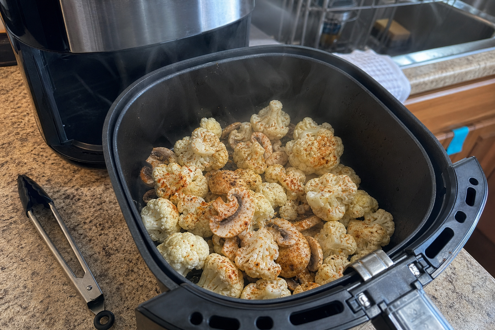
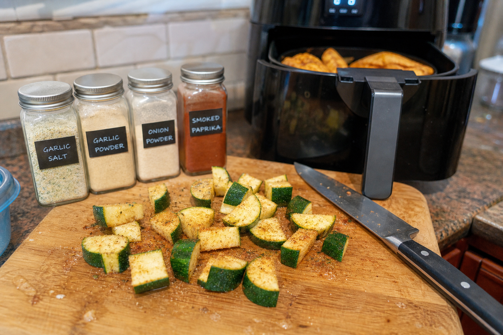
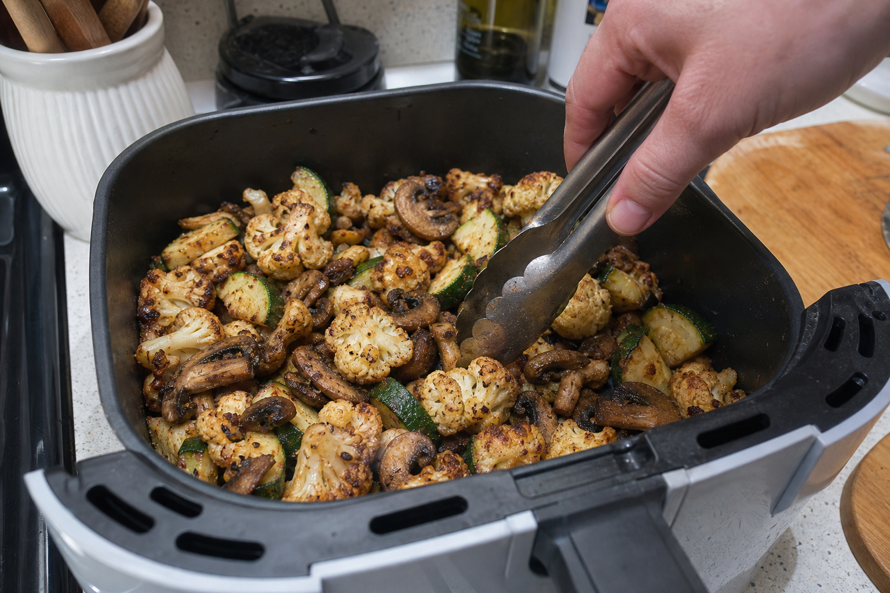
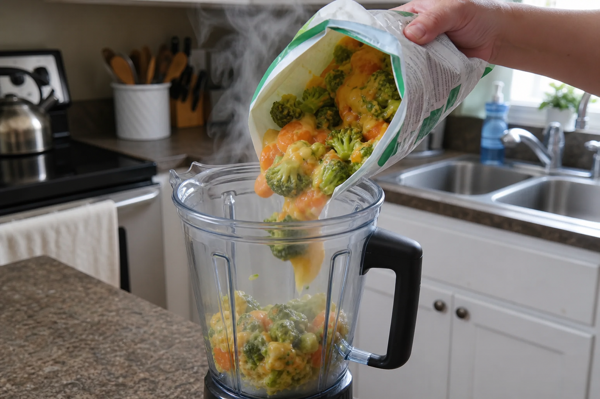
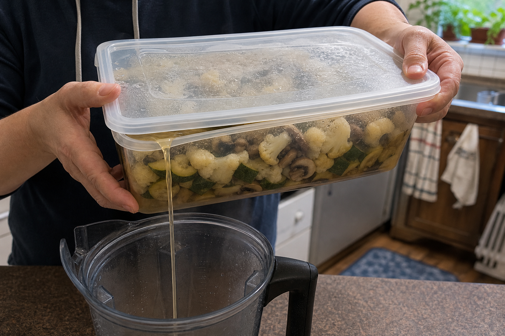
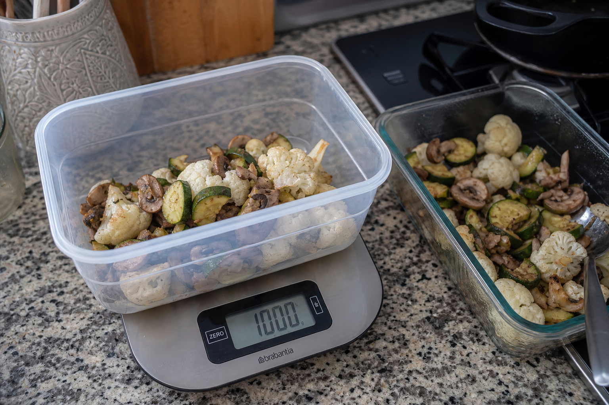
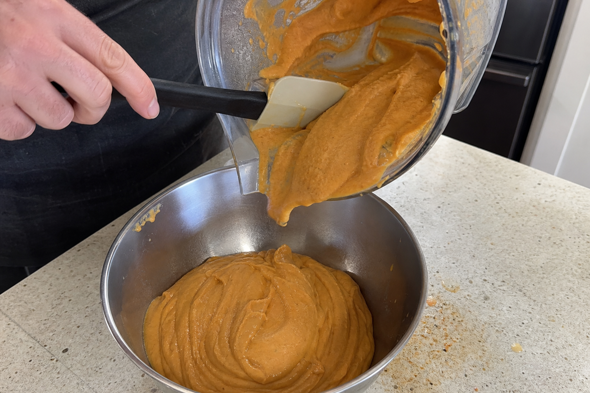
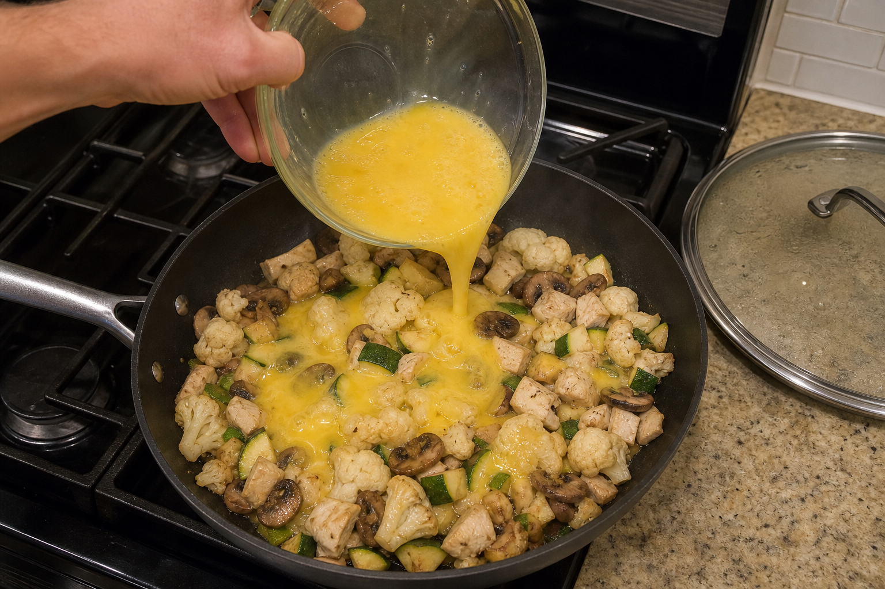
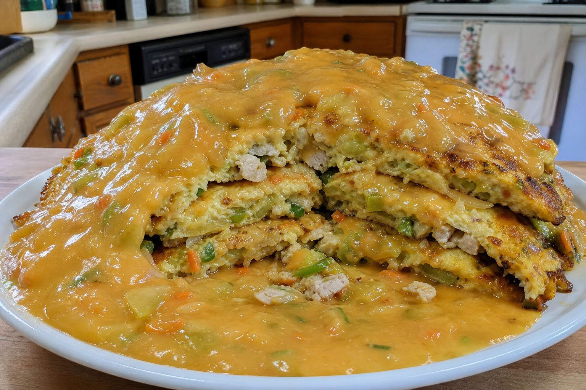

Steps
1. Air fry the cauliflower and mushrooms
Add frozen cauliflower and mushrooms to the air fryer, spray lightly, season, and start at 400°F. Expect steam and moisture early.

2. Chop and season the zucchini
Chop 1000g zucchini and season separately while the first vegetables cook.

3. Finish the vegetable batch
Add zucchini and cook until reduced, soft, lightly browned, and a little charred at the edges, tossing several times.

4. Start the sauce base
Microwave the 110-calorie Green Giant vegetable + cheese packet and pour it into the blender.

5. Drain the vegetable liquid
Transfer cooked vegetables to a container, use the lid to hold the vegetables back, and pour only the liquid into the blender.

6. Measure 1000g cooked vegetables
Weigh out 1000g cooked vegetables for the skillet and save the rest for another meal.

7. Blend the sauce
Blend vegetable packet, drained liquid, sriracha, red miso, garlic salt, and xanthan gum until thick and creamy.

8. Build the skillet and add eggs
Cook garlic briefly, add vegetables and 100g cooked chicken, pour over 1 egg plus 250g egg whites, cover until just setting.

9. Flip, melt cheese, and plate
Cut into sections, flip, add 10g reduced-fat Velveeta, cover with heat off, then plate and sauce heavily.

Optional variations
- Protein: chicken, steak, trout, ground turkey, or chicken-steak combo.
- Vegetables: bean sprouts, cabbage, green onion, water chestnuts.
- Flavor tweaks: soy sauce, ginger, white pepper, extra sriracha.
Safety
Use fully cooked protein. Chicken should be cooked to 165°F before it goes into the skillet. Refrigerate leftovers promptly.